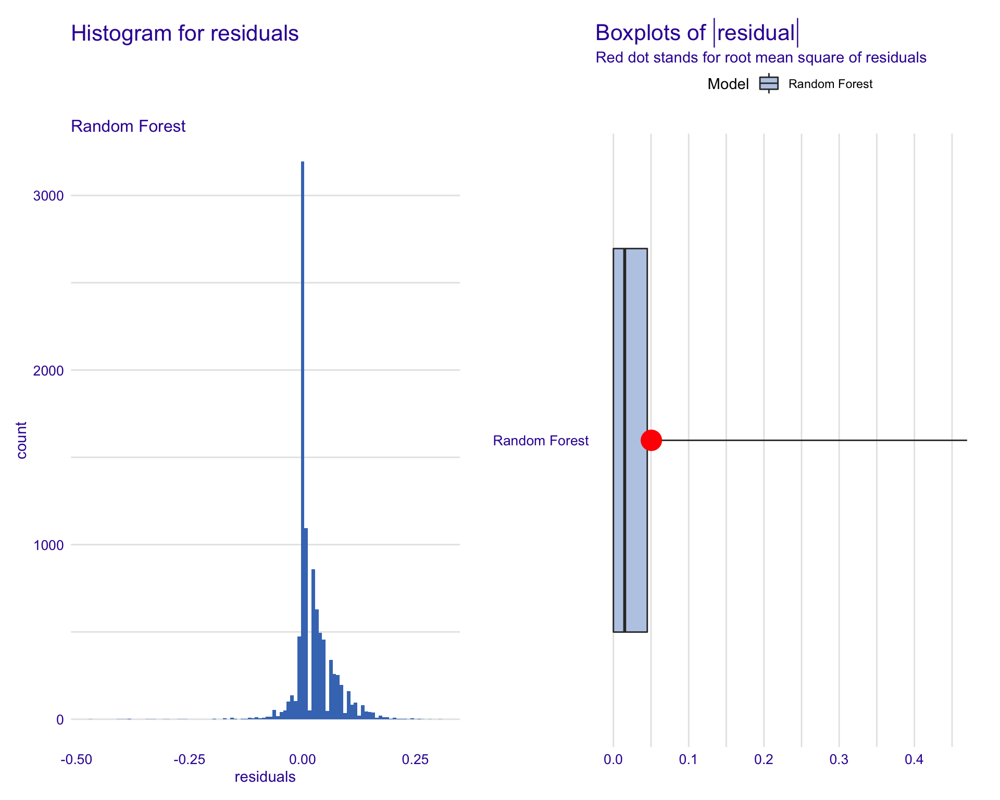
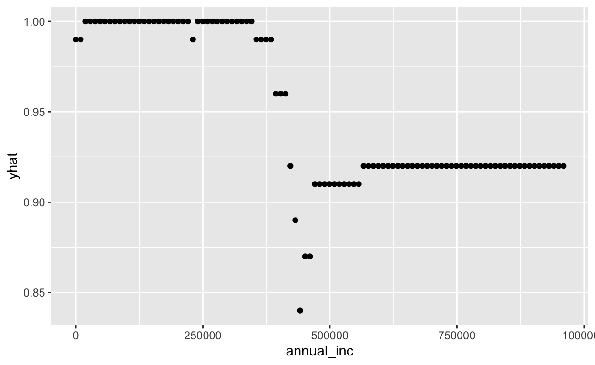

library(tidyverse) # for graphing and data cleaning
library(tidymodels) # for modeling
library(stacks) # for stacking models
library(naniar) # for analyzing missing values
library(lubridate) # for date manipulation
library(moderndive) # for King County housing data
library(vip) # for variable importance plots
library(DALEX) # for model interpretation
library(DALEXtra) # for extension of DALEX
library(patchwork) # for combining plots nicely
data("lending_club")
Put it on GitHub!
Here is my GitHub link.
Modeling
Well be using the lending_club dataset from the modeldata library, which is part of tidymodels. The outcome we are interested in predicting is Class. And according to the datasets help page, its values are either good (meaning that the loan was fully paid back or currently on-time) or bad (charged off, defaulted, of 21-120 days late).
Tasks
- Explore the data, concentrating on examining distributions of variables and examining missing values.
lending_club %>%
ggplot(aes(x = funded_amnt)) +
geom_density() +
facet_wrap(vars(Class))
lending_club %>%
ggplot(aes(x = int_rate)) +
geom_density() +
facet_wrap(vars(Class))
lending_club %>%
ggplot(aes(x = annual_inc)) +
geom_density() +
facet_wrap(vars(Class))
lending_club %>%
ggplot(aes(x = addr_state, fill = Class)) +
geom_bar(position = "fill")
lending_club %>%
count(Class)
# A tibble: 2 x 2
Class n
<fct> <int>
1 bad 517
2 good 9340lending_club %>%
group_by(addr_state) %>%
summarize(count = n()) %>%
arrange(desc(count))
# A tibble: 50 x 2
addr_state count
<fct> <int>
1 CA 1324
2 TX 900
3 NY 767
4 FL 731
5 IL 421
6 NJ 349
7 OH 328
8 GA 320
9 PA 299
10 NC 292
# with 40 more rows- Do any data cleaning steps that need to happen before the model is build. For example, you might remove any variables that mean the same thing as the response variable (not sure if that happens here), get rid of rows where all variables have missing values, etc.
create_more_bad <- lending_club %>%
filter(Class == "bad") %>%
sample_n(size = 3000, replace = TRUE)
lending_club_mod <- lending_club %>%
bind_rows(create_more_bad)
- Split the data into training and test, putting 75% in the training data.
set.seed(494)
lending_split <- initial_split(lending_club_mod,
prop = 0.75)
lending_train <- training(lending_split)
lending_test <- testing(lending_split)
- Set up the recipe and the pre-processing steps to build a lasso model. Some steps you should take:
- Make all integer variables numeric (Id highly recommend using
step_mutate_at()or this will be a lot of code). Well want to do this for the model interpretation well do later. - Think about grouping factor variables with many levels.
- Make categorical variables dummy variables (make sure NOT to do this to the outcome variable).
- Normalize quantitative variables.
lending_recipe <- recipe(Class ~ .,
data = lending_train) %>%
step_rm(acc_now_delinq, delinq_amnt) %>%
step_mutate_at(all_numeric(),
fn = ~as.numeric(.)) %>%
# step_mutate(annual_inc =
# case_when(annual_inc <= 9875 ~ 10,
# annual_inc > 9875 && annual_inc <= 40125 ~ 12,
# annual_inc > 40125 && annual_inc <= 85525 ~ 22,
# annual_inc > 85525 && annual_inc <= 163300 ~ 24,
# annual_inc > 163300 && annual_inc <= 207350 ~ 32,
# annual_inc > 207350 && annual_inc <= 518400 ~ 35,
# annual_inc > 518400 ~ 37)) %>%
# step_mutate(annual_inc = as.factor(annual_inc)) %>%
step_normalize(all_predictors(), -all_nominal()) %>%
step_dummy(all_nominal(), -all_outcomes())
lending_recipe %>%
prep(lending_train) %>%
juice()
# A tibble: 9,643 x 113
funded_amnt int_rate annual_inc delinq_2yrs inq_last_6mths
<dbl> <dbl> <dbl> <dbl> <dbl>
1 0.0248 0.0886 -0.858 -0.365 -0.705
2 1.80 -0.292 -0.149 -0.365 -0.705
3 -0.655 0.527 -0.149 -0.365 1.46
4 0.103 0.0277 0.407 -0.365 -0.705
5 -1.38 -1.17 -0.569 -0.365 -0.705
6 -0.655 -0.391 -0.916 -0.365 -0.705
7 -0.544 -1.56 -0.283 -0.365 -0.705
8 -0.0978 -0.831 2.08 1.82 -0.705
9 -1.10 -0.710 0.177 -0.365 1.46
10 0.459 -0.102 -0.609 0.726 -0.705
# with 9,633 more rows, and 108 more variables: revol_util <dbl>,
# open_il_6m <dbl>, open_il_12m <dbl>, open_il_24m <dbl>,
# total_bal_il <dbl>, all_util <dbl>, inq_fi <dbl>,
# inq_last_12m <dbl>, num_il_tl <dbl>,
# total_il_high_credit_limit <dbl>, Class <fct>,
# term_term_60 <dbl>, sub_grade_A2 <dbl>, sub_grade_A3 <dbl>,
# sub_grade_A4 <dbl>, sub_grade_A5 <dbl>, sub_grade_B1 <dbl>,
# sub_grade_B2 <dbl>, sub_grade_B3 <dbl>, sub_grade_B4 <dbl>,
# sub_grade_B5 <dbl>, sub_grade_C1 <dbl>, sub_grade_C2 <dbl>,
# sub_grade_C3 <dbl>, sub_grade_C4 <dbl>, sub_grade_C5 <dbl>,
# sub_grade_D1 <dbl>, sub_grade_D2 <dbl>, sub_grade_D3 <dbl>,
# sub_grade_D4 <dbl>, sub_grade_D5 <dbl>, sub_grade_E1 <dbl>,
# sub_grade_E2 <dbl>, sub_grade_E3 <dbl>, sub_grade_E4 <dbl>,
# sub_grade_E5 <dbl>, sub_grade_F1 <dbl>, sub_grade_F2 <dbl>,
# sub_grade_F3 <dbl>, sub_grade_F4 <dbl>, sub_grade_F5 <dbl>,
# sub_grade_G1 <dbl>, sub_grade_G2 <dbl>, sub_grade_G3 <dbl>,
# sub_grade_G4 <dbl>, sub_grade_G5 <dbl>, addr_state_AL <dbl>,
# addr_state_AR <dbl>, addr_state_AZ <dbl>, addr_state_CA <dbl>,
# addr_state_CO <dbl>, addr_state_CT <dbl>, addr_state_DC <dbl>,
# addr_state_DE <dbl>, addr_state_FL <dbl>, addr_state_GA <dbl>,
# addr_state_HI <dbl>, addr_state_ID <dbl>, addr_state_IL <dbl>,
# addr_state_IN <dbl>, addr_state_KS <dbl>, addr_state_KY <dbl>,
# addr_state_LA <dbl>, addr_state_MA <dbl>, addr_state_MD <dbl>,
# addr_state_ME <dbl>, addr_state_MI <dbl>, addr_state_MN <dbl>,
# addr_state_MO <dbl>, addr_state_MS <dbl>, addr_state_MT <dbl>,
# addr_state_NC <dbl>, addr_state_ND <dbl>, addr_state_NE <dbl>,
# addr_state_NH <dbl>, addr_state_NJ <dbl>, addr_state_NM <dbl>,
# addr_state_NV <dbl>, addr_state_NY <dbl>, addr_state_OH <dbl>,
# addr_state_OK <dbl>, addr_state_OR <dbl>, addr_state_PA <dbl>,
# addr_state_RI <dbl>, addr_state_SC <dbl>, addr_state_SD <dbl>,
# addr_state_TN <dbl>, addr_state_TX <dbl>, addr_state_UT <dbl>,
# addr_state_VA <dbl>, addr_state_VT <dbl>, addr_state_WA <dbl>,
# addr_state_WI <dbl>, addr_state_WV <dbl>, addr_state_WY <dbl>,
# verification_status_Source_Verified <dbl>,
# verification_status_Verified <dbl>, emp_length_emp_1 <dbl>,
# emp_length_emp_ge_10 <dbl>, emp_length_emp_2 <dbl>, - Set up the LASSO model and workflow. We will tune the
penaltyparameter.
lasso_lending_mod <- logistic_reg(mixture = 1) %>%
set_engine("glmnet") %>%
set_args(penalty = tune()) %>%
set_mode("classification")
lasso_lending_mod
Logistic Regression Model Specification (classification)
Main Arguments:
penalty = tune()
mixture = 1
Computational engine: glmnet lending_workflow <- workflow() %>%
add_recipe(lending_recipe) %>%
add_model(lasso_lending_mod)
lending_workflow
Workflow
Preprocessor: Recipe
Model: logistic_reg()
Preprocessor
4 Recipe Steps
step_rm()
step_mutate_at()
step_normalize()
step_dummy()
Model
Logistic Regression Model Specification (classification)
Main Arguments:
penalty = tune()
mixture = 1
Computational engine: glmnet - Set up the model tuning for the
penaltyparameter. Be sure to add thecontrol_stack_grid()for thecontrolargument so we can use these results later when we stack. Find the accuracy and area under the roc curve for the model with the best tuning parameter. Use 5-fold cv.
set.seed(494)
lending_cv <- vfold_cv(lending_train, v = 5)
lending_lasso_pen_grid <- grid_regular(penalty(), levels = 10)
ctrl_grid <- control_stack_grid()
lending_lasso_tune <- lending_workflow %>%
tune_grid(resamples = lending_cv,
grid = lending_lasso_pen_grid,
control = ctrl_grid)
lending_lasso_tune %>%
show_best(metric = "accuracy")
# A tibble: 5 x 7
penalty .metric .estimator mean n std_err .config
<dbl> <chr> <chr> <dbl> <int> <dbl> <chr>
1 5.99e- 3 accura binary 0.756 5 0.00543 Preprocessor1_M
2 4.64e- 4 accura binary 0.756 5 0.00628 Preprocessor1_M
3 3.59e- 5 accura binary 0.755 5 0.00648 Preprocessor1_M
4 1.00e-10 accura binary 0.754 5 0.00658 Preprocessor1_M
5 1.29e- 9 accura binary 0.754 5 0.00658 Preprocessor1_Mlending_lasso_tune %>%
collect_metrics() %>%
filter(.config == "Preprocessor1_Model01")
# A tibble: 2 x 7
penalty .metric .estimator mean n std_err .config
<dbl> <chr> <chr> <dbl> <int> <dbl> <chr>
1 1.00e-10 accuracy binary 0.754 5 0.00658 Preprocessor1_M
2 1.00e-10 roc_auc binary 0.769 5 0.00391 Preprocessor1_M- Set up the recipe and the pre-processing steps to build a random forest model. You shouldnt have to do as many steps. The only step you should need to do is making all integers numeric.
ranger_recipe <- recipe(Class ~ .,
data = lending_train) %>%
# step_rm(acc_now_delinq, delinq_amnt) %>%
step_mutate_at(all_numeric(),
fn = ~as.numeric(.))
# step_mutate(annual_inc =
# case_when(annual_inc <= 9875 ~ 10,
# annual_inc > 9875 && annual_inc <= 40125 ~ 12,
# annual_inc > 40125 && annual_inc <= 85525 ~ 22,
# annual_inc > 85525 && annual_inc <= 163300 ~ 24,
# annual_inc > 163300 && annual_inc <= 207350 ~ 32,
# annual_inc > 207350 && annual_inc <= 518400 ~ 35,
# annual_inc > 518400 ~ 37)) %>%
#step_mutate(annual_inc = as.factor(annual_inc)
- Set up the random forest model and workflow. We will tune the
mtryandmin_nparameters and set the number of trees,trees, to 100 (otherwise the next steps take too long).
ranger_spec <- rand_forest(mtry = tune(),
min_n = tune(),
trees = 100) %>%
set_mode("classification") %>%
set_engine("ranger")
ranger_spec
Random Forest Model Specification (classification)
Main Arguments:
mtry = tune()
trees = 100
min_n = tune()
Computational engine: ranger ranger_workflow <- workflow() %>%
add_recipe(ranger_recipe) %>%
add_model(ranger_spec)
ranger_workflow
Workflow
Preprocessor: Recipe
Model: rand_forest()
Preprocessor
1 Recipe Step
step_mutate_at()
Model
Random Forest Model Specification (classification)
Main Arguments:
mtry = tune()
trees = 100
min_n = tune()
Computational engine: ranger - Set up the model tuning for both the
mtryandmin_nparameters. Be sure to add thecontrol_stack_grid()for the control argument so we can use these results later when we stack. Use only 3 levels in the grid. For themtryparameter, you need to putfinalize(mtry(), lending_training %>% select(-Class))in as an argument instead of justmtry(), wherelending_trainingis the name of your training data. This is because themtry()grid will otherwise have unknowns in it. This part can take a while to run.
set.seed(494)
lending_rf_grid <- grid_regular(min_n(),
finalize(mtry(), lending_train %>% select(-Class)),
levels = 3)
ctrl_res <- control_stack_grid()
ranger_cv <- ranger_workflow %>%
tune_grid(resamples = lending_cv,
grid = lending_rf_grid,
control = ctrl_res)
- Find the best tuning parameters. What is the are the accuracy and area under the ROC curve for the model with those tuning parameters?
ranger_cv %>%
show_best(metric = "accuracy")
# A tibble: 5 x 8
mtry min_n .metric .estimator mean n std_err .config
<int> <int> <chr> <chr> <dbl> <int> <dbl> <chr>
1 11 2 accuracy binary 0.989 5 0.00124 Preprocessor1_M
2 22 2 accuracy binary 0.987 5 0.00177 Preprocessor1_M
3 22 21 accuracy binary 0.973 5 0.00270 Preprocessor1_M
4 11 21 accuracy binary 0.972 5 0.00158 Preprocessor1_M
5 22 40 accuracy binary 0.947 5 0.00360 Preprocessor1_Mranger_cv %>%
collect_metrics() %>%
filter(.config == "Preprocessor1_Model4")
# A tibble: 2 x 8
mtry min_n .metric .estimator mean n std_err .config
<int> <int> <chr> <chr> <dbl> <int> <dbl> <chr>
1 11 2 accuracy binary 0.989 5 0.00124 Preprocessor1_M
2 11 2 roc_auc binary 0.993 5 0.00226 Preprocessor1_MThe best tuning parameters are 11 for mtry and 2 for min_n.
- Use functions from the
DALEXandDALEXtralibraries to create a histogram and boxplot of the residuals from the training data. How do they look? Any interesting behavior?
best_param <- lending_lasso_tune %>%
select_best(metric = "accuracy")
lending_lasso_final_wf <- lending_workflow %>%
finalize_workflow(best_param)
lending_lasso_final_mod <- lending_lasso_final_wf %>%
fit(data = lending_train)
best_param_ranger <- ranger_cv %>%
select_best(metric = "accuracy")
lending_ranger_final_wf <- ranger_workflow %>%
finalize_workflow(best_param_ranger)
set.seed(494)
ranger_fit <- lending_ranger_final_wf %>%
fit(lending_train)
lending_lasso_explain <- explain_tidymodels(
model = lending_lasso_final_mod,
data = lending_train %>% select(-Class),
y = as.numeric(lending_train$Class == "good"),
label = "LASSO",
type = "classification"
)
Preparation of a new explainer is initiated
-> model label : LASSO
-> data : 9643 rows 22 cols
-> data : tibble converted into a data.frame
-> target variable : 9643 values
-> predict function : yhat.workflow will be used ( [33m default [39m )
-> predicted values : No value for predict function target column. ( [33m default [39m )
-> model_info : package tidymodels , ver. 0.1.2 , task classification ( [33m default [39m )
-> model_info : type set to classification
-> predicted values : numerical, min = 0.01548382 , mean = 0.7258176 , max = 0.9741732
-> residual function : difference between y and yhat ( [33m default [39m )
-> residuals : numerical, min = -0.9341077 , mean = -6.156144e-06 , max = 0.9845162
[32m A new explainer has been created! [39m lending_rf_explain <- explain_tidymodels(
model = ranger_fit,
data = lending_train %>% select(-Class),
y = as.numeric(lending_train$Class == "good"),
label = "Random Forest",
type = "classification"
)
Preparation of a new explainer is initiated
-> model label : Random Forest
-> data : 9643 rows 22 cols
-> data : tibble converted into a data.frame
-> target variable : 9643 values
-> predict function : yhat.workflow will be used ( [33m default [39m )
-> predicted values : No value for predict function target column. ( [33m default [39m )
-> model_info : package tidymodels , ver. 0.1.2 , task classification ( [33m default [39m )
-> model_info : type set to classification
-> predicted values : numerical, min = 0 , mean = 0.7022892 , max = 1
-> residual function : difference between y and yhat ( [33m default [39m )
-> residuals : numerical, min = -0.435 , mean = 0.02352224 , max = 0.31
[32m A new explainer has been created! [39m lending_lasso_model_perf <- model_performance(lending_lasso_explain)
lending_lasso_model_perf
Measures for: classification
recall : 0.9388484
precision : 0.7772652
f1 : 0.8504498
accuracy : 0.7603443
auc : 0.7711454
Residuals:
0% 10% 20% 30% 40%
-0.93410769 -0.68328016 -0.48796309 0.06345582 0.09743233
50% 60% 70% 80% 90%
0.13030053 0.16907875 0.21763717 0.29563455 0.40101433
100%
0.98451618 lending_rf_model_perf <- model_performance(lending_rf_explain)
lending_rf_model_perf
Measures for: classification
recall : 1
precision : 1
f1 : 1
accuracy : 1
auc : 1
Residuals:
0% 10% 20% 30% 40% 50% 60% 70% 80% 90%
-0.435 -0.005 0.000 0.000 0.000 0.010 0.020 0.030 0.050 0.080
100%
0.310 hist_plot <-
plot(#lending_lasso_model_perf,
lending_rf_model_perf,
geom = "histogram")
box_plot <-
plot(#lending_lasso_model_perf,
lending_rf_model_perf,
geom = "boxplot")
hist_plot + box_plot

The histogram is fairly normally distributed with a slight right skew towards positive residuals. The boxplot shows that there is a large amount of residual variance which is evidence by the RMSE being located outside of the IQR, as well as the long tail on the right.
- Use
DALEXfunctions to create a variable importance plot from this model. What are the most important variables?
set.seed(494)
lending_lasso_var_imp <-
model_parts(
lending_lasso_explain
)
lend_lasso_VIP_plot <-
plot(lending_lasso_var_imp, show_boxplots = TRUE)
lending_rf_var_imp <-
model_parts(
lending_rf_explain
)
lend_rf_VIP_plot <-
plot(lending_rf_var_imp, show_boxplots = TRUE)
lend_lasso_VIP_plot
lend_rf_VIP_plot
Interest rate seems to be the most important variable by a large margin for the LASSO. For the random forest, annual income and interest rate are also much more important than any of the other variables, with annual income being more important than interest rate, which is the opposite of the LASSO.
- Write a function called
cp_profileto make a CP profile. The function will take an explainer, a new observation, and a variable name as its arguments and create a CP profile for a quantitative predictor variable. You will need to use thepredict_profile()function inside the function you create - put the variable name there so the plotting part is easier. Youll also want to useaes_string()rather thanaes()and quote the variables. Use thecp_profile()function to create one CP profile of your choosing. Be sure to choose a variable that is numeric, not integer. There seem to be issues with those that Im looking into.
cp_profile <- function(explainer, newObs, varName) {
predict_profile(explainer = explainer,
new_observation = newObs,
variables = varName) %>%
rename(yhat = `_yhat_`) %>%
ggplot(aes_string(x = varName, y = 'yhat')) +
geom_point()
}
set.seed(494)
cp_profile(explainer = lending_rf_explain,
newObs = lending_train %>% slice_sample(),
varName = 'annual_inc')

- Use
DALEXfunctions to create partial dependence plots (with the CP profiles in gray) for the 3-4 most important variables. If the important variables are categorical, you can instead make a CP profile for 3 observations in the dataset and discuss how you could go about constructing a partial dependence plot for a categorical variable (you dont have to code it, but you can if you want an extra challenge). If it ever gives you an error that says, Error: Cant convert fromVARIABLEtoVARIABLEdue to loss of precision, then remove that variable from the list. I seem to have figured out why its doing that, but I dont know how to fix it yet.
rf_pdp <- model_profile(explainer = lending_rf_explain,
variables = c('int_rate', 'annual_inc', 'open_il_12m', 'open_il_24m'))
plot(rf_pdp,
variables = 'int_rate',
geom = 'profiles')
plot(rf_pdp,
variables = 'annual_inc',
geom = 'profiles')
plot(rf_pdp,
variables = 'open_il_12m',
geom = 'profiles')
plot(rf_pdp,
variables = 'open_il_24m',
geom = 'profiles')
- Fit one more model type of your choosing that will feed into the stacking model.
lending_knn_mod <-
nearest_neighbor(
neighbors = tune("k")
) %>%
set_engine("kknn") %>%
set_mode("classification")
lending_knn_workflow <- workflow() %>%
add_model(lending_knn_mod) %>%
add_recipe(lending_recipe)
lending_knn_tune <- lending_knn_workflow %>%
tune_grid(resamples = lending_cv,
grid = 4,
control = ctrl_grid)
- Create a model stack with the candidate models from the previous parts of the exercise and use the
blend_predictions()function to find the coefficients of the stacked model. Create a plot examining the performance metrics for the different penalty parameters to assure you have captured the best one. If not, adjust the penalty. (HINT: use theautoplot()function). Which models are contributing most?
set.seed(494)
lending_stack <-
stacks() %>%
add_candidates(ranger_cv) %>%
add_candidates(lending_lasso_tune) %>%
add_candidates(lending_knn_tune)
lending_blend <- lending_stack %>%
blend_predictions()
lending_blend
# A tibble: 3 x 3
member type weight
<chr> <chr> <dbl>
1 .pred_good_ranger_cv_1_4 rand_forest 7.80
2 .pred_good_ranger_cv_1_7 rand_forest 4.76
3 .pred_good_lending_knn_tune_1_1 nearest_neighbor 0.569autoplot(lending_blend)
autoplot(lending_blend, type = "weights")

The random forest models are contributing the most, with the knn model contributing slightly.
- Fit the final stacked model using
fit_members(). Apply the model to the test data and report the accuracy and area under the curve. Create a graph of the ROC and construct a confusion matrix. Comment on what you see. Save this final model using thesaveRDS()function - see the Use the model section of the tidymodels intro. We are going to use the model in the next part. Youll want to save it in the folder where you create your shiny app.
lending_final_stack <- lending_blend %>%
fit_members()
lending_final_stack
# A tibble: 3 x 3
member type weight
<chr> <chr> <dbl>
1 .pred_good_ranger_cv_1_4 rand_forest 7.80
2 .pred_good_ranger_cv_1_7 rand_forest 4.76
3 .pred_good_lending_knn_tune_1_1 nearest_neighbor 0.569saveRDS(lending_final_stack, file = "lending_final_stack")
lending_stack_test <- lending_test %>%
bind_cols(predict(lending_final_stack, new_data = lending_test, type = "prob")) %>%
bind_cols(predict(lending_final_stack, new_data = lending_test))
lending_stack_test %>%
accuracy(.pred_class, Class)
# A tibble: 1 x 3
.metric .estimator .estimate
<chr> <chr> <dbl>
1 accuracy binary 0.998lending_stack_test %>%
roc_auc(Class, .pred_bad)
# A tibble: 1 x 3
.metric .estimator .estimate
<chr> <chr> <dbl>
1 roc_auc binary 0.998autoplot(roc_curve(lending_stack_test, Class, .pred_bad))
Shiny App
The shiny app is not finished but a link to the GitHub page is provided to show progress.
- Here is the GitHub repository for my Shiny app.
Coded Bias
- The part of the film that impacted me the most was the part where the high school aged kid was stopped on the street in London because the facial recognition technology misidentified him due to his race. It provided me evidence for how much of a problem this truly is. I was most surprised by how widespread facial recognition was used in China, and how China uses it to create a citizen rating. I was also surprised at how the United States does this without nearly as much transparency, which is a huge problem in my eyes. It was truly shocking how transparent China is about facial recognition software uses, and how some citizens are okay with what China is doing. I was also shocked that there is no AI or Machine Learning Algorithm regulation in the United States. Overall, I felt generally unsettled by the documentary, as it made me fear for the future of algorithm usage in the United States.